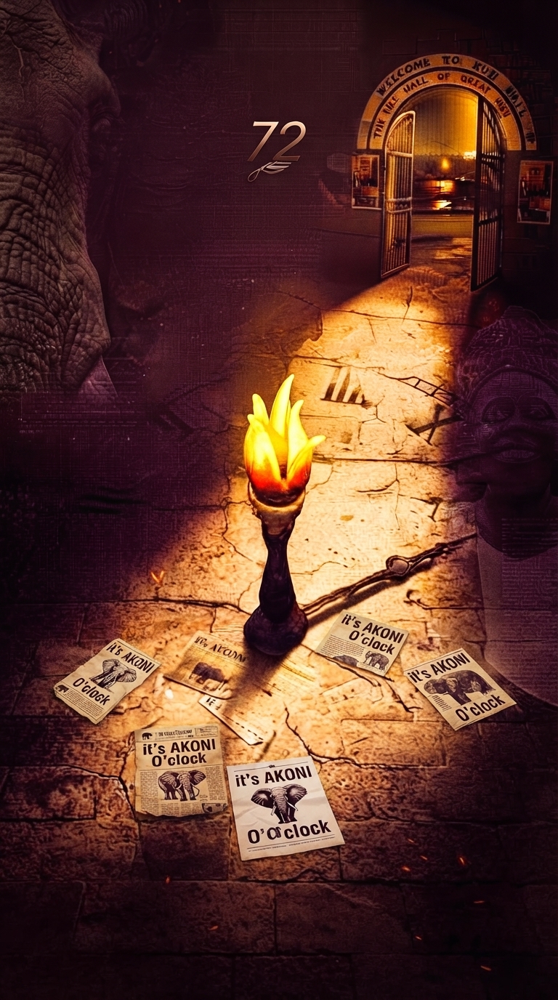

More than a name.
RKH is a shared record of the people, stories, and small acts of excellence that give a community its identity.

Hall of Honour · 2024
Please enter your vote token.
The chamber is open
The Ransome Kuti Awards are a moment to pause, remember the people who shape our halls, and celebrate the character behind their contribution.
RKH is a shared record of the people, stories, and small acts of excellence that give a community its identity.
Every nomination gives a meaningful contribution a place in the collective story — and invites the next one.
The awards are not only a look back. They are a reminder that the next chapter is shaped by all of us.
Every story begins with a person whose effort, care, and courage leave a mark on the community.
The ballot awaits
Move through each category with intention. Every selection is a small record of the people who make this community matter.
Celebrating imagination, craft, and original expression.
Honouring the committee that made the biggest collective impact.
Recognising a standout first-year presence.
For a fresher with a visible voice in hall life.
Recognising a distinctive first-year style.
Celebrating a memorable and influential Staylite.
For the group whose presence shaped the year.
Recognising a Staylite with a defining public voice.
For a Staylite with unmistakable personal style.
Celebrating a finalist who made their mark.
For a finalist whose voice carried weight.
Recognising a finalist with a signature look.
Honouring excellence in communication and coverage.
For a voice that commands attention and clarity.
Celebrating athletic excellence and spirit.
Recognising outstanding executive leadership.
Honouring wisdom, guidance, and lasting influence.
Celebrating commitment to learning and excellence.
For initiative, enterprise, and building something new.
Recognising service, reliability, and care.
For character, honour, and public regard.
Celebrating a woman whose presence stands apart.
The nominees
Three names. One vote. Take a moment to recognise the person whose contribution stands out to you.
Ransome Kuti Awards
Akoni ti dé.
Amin.
One final step
You have completed every category. Submit your choices now?